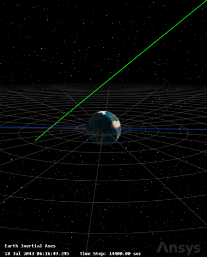
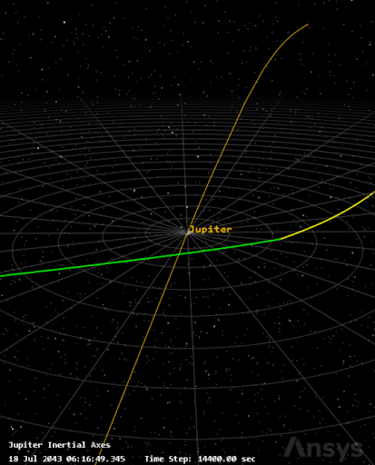
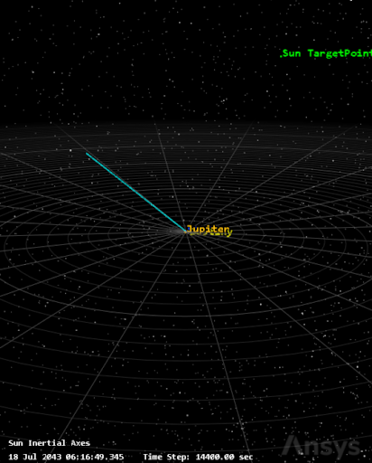

Project Overview
Destiny is a senior capstone mission concept to reach 650 AU and use the Sun as a gravitational lens for deep-space imaging. The design covers spacecraft architecture, trajectory planning, and long-term operations for a 57-year mission.
The plan combines a methalox bipropellant system for early maneuvers with a 410 m × 410 m solar sail for the long cruise. An RTG powers the spacecraft through the decades-long journey, with round-trip communications delayed by over 10 days at the far end.
My Role: Flight Dynamics Lead
I led the flight dynamics work, defining the trajectory, validating the mission timeline, and estimating the ΔV needed for each phase.
Key Responsibilities:
- Trajectory Design - Built the three-leg mission plan in AGI STK Astrogator, including Earth-to-Jupiter, Jupiter gravity assist with plane change, and a Solar Oberth burn.
- ΔV Budget - Estimated 57.7 km/s total ΔV using Lambert solutions, down from a 65 km/s baseline.
- Simulation Setup - Configured Sun-centered STK scenarios with gravity, solar radiation pressure, and perturbation models for long-term propagation.
- Timeline Planning - Mapped the mission from launch in 2049 through imaging operations at 650-900 AU after 2096.
- Orbital Analysis - Evaluated Jupiter assist effectiveness, Solar Oberth dynamics, and long-duration coast segment stability.
- Verification - Checked maneuver sequences and convergence, and coordinated requirements with propulsion and thermal teams.
- MATLAB Support - Created a flight dynamics calculator for initial architecture estimates.
Mission Schedule
Jupiter's 11.86-year window drives the mission timing. The schedule spans mission development, launch, key maneuvers, and the long cruise to the focal region.
2025-2026: Mission design
2026-2028: Design finalization
2028-2030: Funding and contracting
2030-2049: Manufacturing and testing
2049: Launch and Earth escape
2054: Jupiter flyby
2056: Solar sail deployment and solar flyby
2058: 30 AU pass and sail detachment
2058-2096: Cruise to 650 AU
2096: Reach 650 AU and begin imaging
2096+: Continue toward 900 AU
Flight Dynamics Analysis
Trajectory Design
The mission was modeled in a Sun-centered STK Astrogator scenario with three sequential legs: Earth to Jupiter, Jupiter to the Sun, and Solar Oberth escape to 650 AU.
Three-Leg Architecture
- Earth to Jupiter: GEO escape into a heliocentric transfer, then a 5-year coast to Jupiter.
- Jupiter to Sun: A plane change at close perijove directs the spacecraft toward the solar perihelion target.
- Sun to 650 AU: A Solar Oberth burn at 0.14 AU sends Destiny onto a hyperbolic escape trajectory.
ΔV Budget
Initial transfer solutions were generated with STK's Lambert Solver, which estimates the velocity changes needed for each leg.
• GEO Escape: 12.5 km/s
• Jupiter Plane Change: 3.6 km/s
• Solar Oberth: 41.6 km/s
• Cruise Spiral: 4.8 km/s
Total: 57.7 km/s
Tools & Methodology
STK Astrogator was used for high-fidelity propagation, maneuver targeting, and visualization.
- Force models: solar gravity, solar radiation pressure, relativistic perturbations
- Maneuver targeting with differential correctors and Lambert solvers
- Constraint solving for mission legs and rendezvous conditions
- Visualization in heliocentric, Jupiter-centric, and solar-centric frames
Current Status
The current model optimizes each leg independently, so it does not yet guarantee the final trajectory is aimed precisely at anti-Proxima Centauri b. The overall architecture is promising, but end-to-end optimization remains to be completed.
Mission Visualizations
STK trajectory images show key mission phases from launch through Solar Oberth escape to 650 AU.



Note: the current trajectory still needs a full end-to-end optimization to hit the target direction accurately.
Project Poster
This poster was presented at SDSU Senior Design Day. I contributed the mission timeline and flight dynamics content.

Final Presentation
Watch the senior design day presentation for this mission.
Final Paper
Read the full paper covering the Destiny mission design, flight dynamics, operations, and spacecraft architecture.
The highlighted sections were done by me, including sections I.D, XII, XIII.A.3, and the code reproducibility Flight Dynamics section.
GitHub Repository
The project code and documentation are available on GitHub.